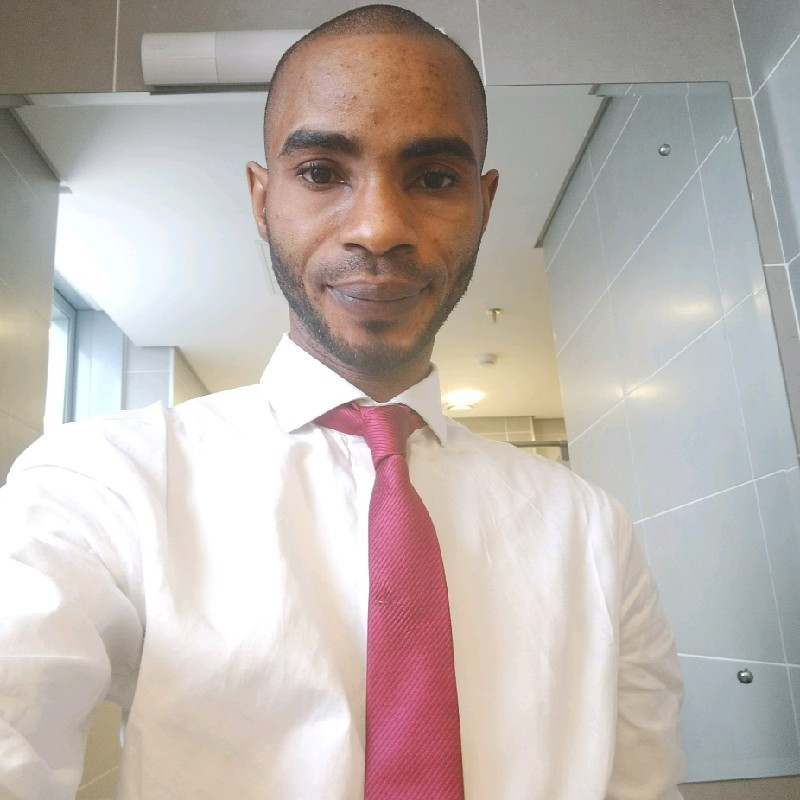

Abraham Idiahi

PROFILE
Dedicated and resourceful professional seeking to leverage a proven track record as an Administrative Assistant at Agency Zoli Concepta. Adept at
managing tasks with precision, ensuring optimal efficiency, and fostering a positive working environment. Eager to bring strong communication, problem-solving, and multitasking skills to a challenging role.
EDUCATION
- BSC / COMPUTER SCIENCE - Ambrose Alli University (2011-2015)
- WASSCE - Unity Secondary School (2022-2008)
- PGD (In-view) / COMPUTER SCIENCE - Lagos State Univesristy
PROFESSIONAL EXPERIENCE
-
Personal Assistant (Legal Department) - BUA Cement Plc.
Dec.2022 - Till Date
- Scheduling appointments and meetings
- Coordinating and organizing events
- Handling incoming and outgoing emails
- Preparing meeting agendas and materials and note taking.
- Prepare and edit documents, including correspondence, reports,and presentations.
- Organise and maintain digital and hard copy files and records.
- Liaising with internal and external stakeholders
- Managing multiple tasks and priorities simultaneously.
-
Legal Secretary (Information Technology) - Jackson, Etti and Edu.
April 2021 - December 2022
- Provide comprehensive administrative support for the Partners and the
Department, these includes IT support, managing an extremely active
calendar of appointments, completing expense reports, composing, and
preparing correspondence that is sometimes confidential, arranging
- Setting up of telecast meeting with averagely 100 people in attendance.
- Typing up legal documents and assisting with IT related issues.
- Keeping records up to date, organizing diaries, and answering the phone
- Attending and taking notes at meetings and assisting lawyers in collecting legal and factual documents
SKILLS
- Office administrator
- Customer service
- Virtual Assitant (VA)
- Interpersonal Communication
- Web Developer
- Software Analyst
AWARDS AND CERTIFCATION
- Virtual Assitant Certificate (DEXA) - 2024
- Project Management Certifiacte (DEXA) - 2024
- General Course on Intellectual Property (WIPO ACADEMY ) - 2021
- Front-End Fundamentals (Pirple.com) - 2020
- Best Educator, Transforming Ajegunle Project (TAP) - 2020
- Certificate in Data Analysis (University of Ibadan, UI) - June 2018 - Sep. 2018
- One of the 3 Best SIWESS student, Dept. of Computer Science, Ambrose Alli University - 2014